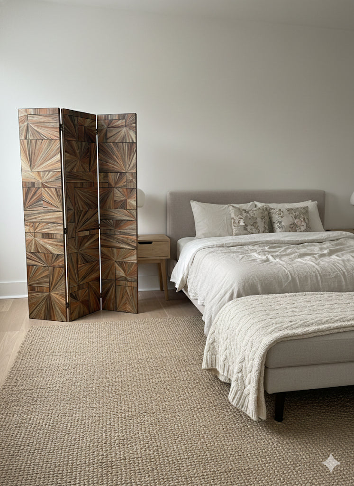
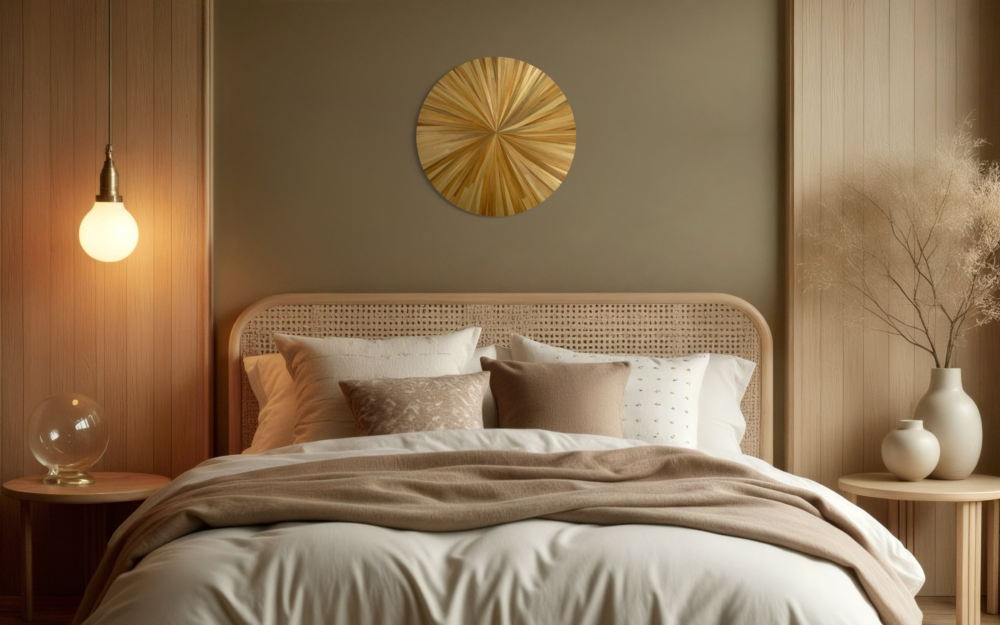
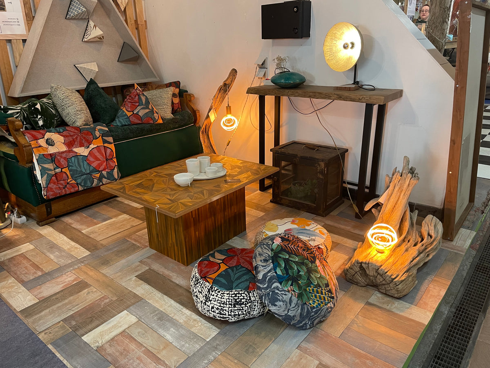
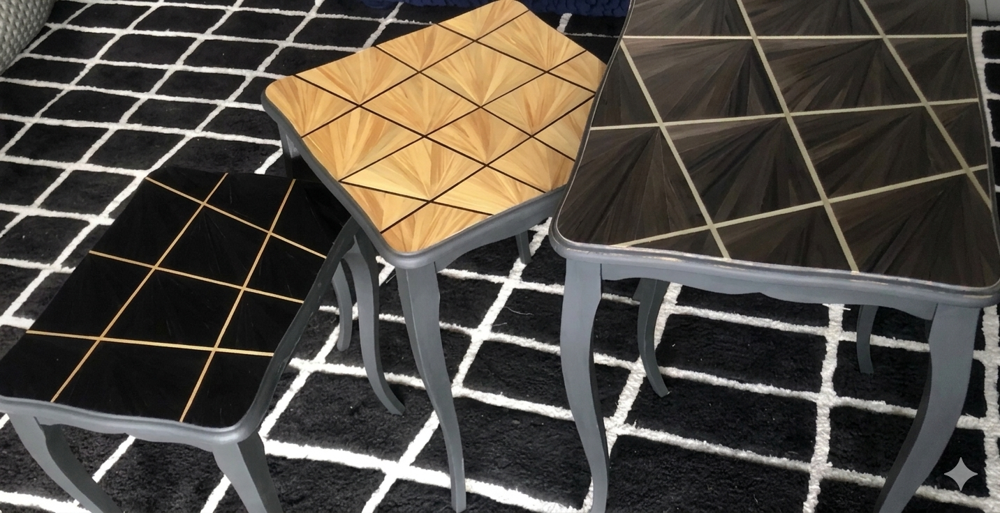
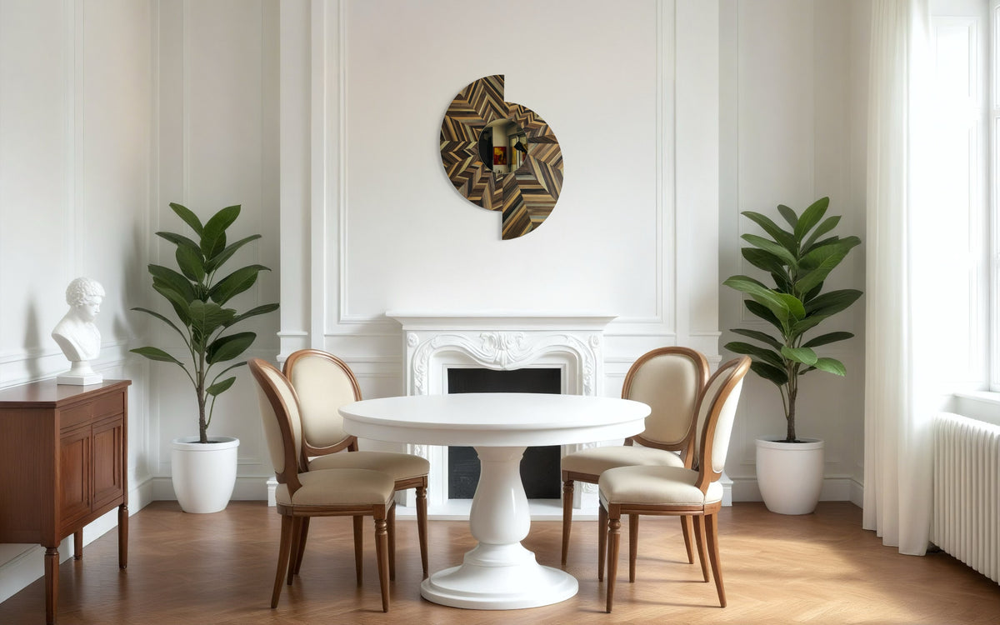

Je ne travaille pas la paille. Je travaille la lumière qu'elle capte, qu'elle retient, qu'elle rend. Chaque brin fendu, aplani, posé à la main — aucune machine, chaque teinte née à la source, dans les mains du cultivateur. Pour les particuliers, architectes et décorateurs, je conçois des pièces qui dialoguent avec votre espace.

Bourgogne
Tout commence par une botte de paille de seigle sélectionnée pour sa finesse et sa régularité. Chaque tige est choisie à la main avant d'entrer en fabrication.
Chaque brin est fendu dans sa longueur, puis aplani au plioir. Un geste lent, précis, répété des centaines de fois — aucune machine ne peut le remplacer.
Les brins sont posés et collés un à un sur le support, selon le motif dessiné. C'est dans cette répétition minutieuse que naît la composition lumineuse.
Vérification brin par brin, reprise des angles et des joints. La paille de seigle est naturellement protégée par sa silice — un lustrage au chiffon doux, parfois rehaussé d'une cire anticaire. La pièce n'est livrée que lorsqu'elle atteint l'exigence de l'atelier.